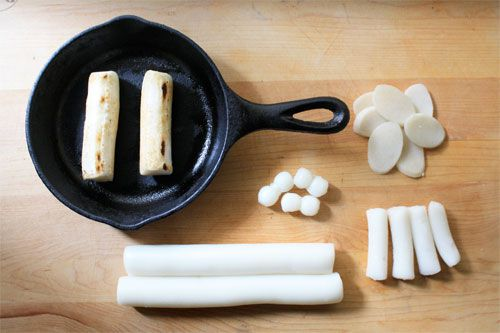
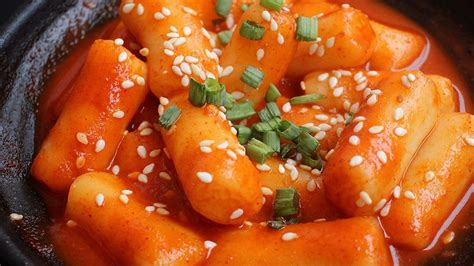

<- Go back :)
Tteokbokki(Korean Rice Cakes), fast and easy!

Do you ever wish to try and make other culture's foods that you enjoy maybe at restaurants,
but you feel unsure or maybe scared that it will result in total DISASTER?
Or maybe you wished to impress someone cooking different foods that you're used to?
THEN THIS DISH IS EXACTLY WHAT YOU'RE LOOKING FOR!
Tteokbokki, also called Korean Rice cakes, is a korean street comfort food that's easy, but
delicious to make and there's no failing to it, for how easy it is!
In this recipe we will teach you exactly how to master this simple but delicious Korean dish!
*Ingredients*:
- 6 to 8 Fresh long rice cake sticks, or 20 smaller rice cake sticks
- 2 Tablespoons vegetable oil
- 2 cups Korean soup stock (Dashi Stock; dried kelp and dried anchovy)
- 5.3 ounces Korean fish cakes, rinsed over hot water & cut into bite size pieces
*For the Sauce*:
- 3 tablespoons Korean chile pepper paste (gochujang)
- 3 to 4 tablespoons light soy sauce
- 1 teaspoon sugar
- 1 teaspoon rice vinegar
- 1 teaspoon minced garlic
- 1 teaspoon gochugaru(Korean chili flakes)
- 1 teaspoon sesame oil, 1 teaspoon Roasted sesame seeds, and 1 stalk green onion to garnish.
*1 Tbsp = 15 ml, 1 Cup = 250 ml*

Instructions:
- Soak the rice cakes in warm water for 10 mins.
(If you are using fresh rice cakes that are already tender, feel free to skip this step).
If using refrigerated rice cake sticks, it is recommended to soak them
to enhance their moisture level before proceeding with the recipe.
boil according to instructions on package, about 5 to 10 minutes, until soft.
- Boil the soup stock in a shallow pot over medium high heat and dissolve the tteokbokki sauce by stirring it with a spatula.
Once the seasoned stock is boiling, add the rice cakes, fish cakes and onion. Boil them a further 3 to 5 mins until the rice cakes are fully cooked.
Then, to thicken the sauce and to deepen the flavor, simmer it over low heat for a further 2 to 4 mins.
- Add the sesame oil, sesame seeds, and green onion then quickly stir. Serve warm.

ENJOY!! :)